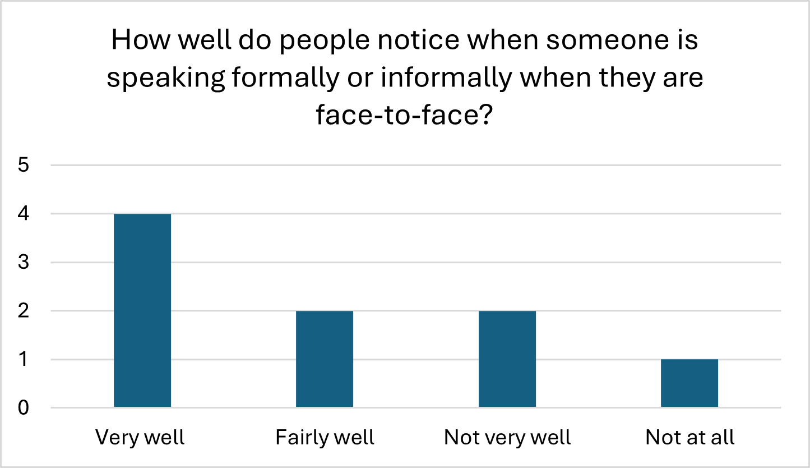
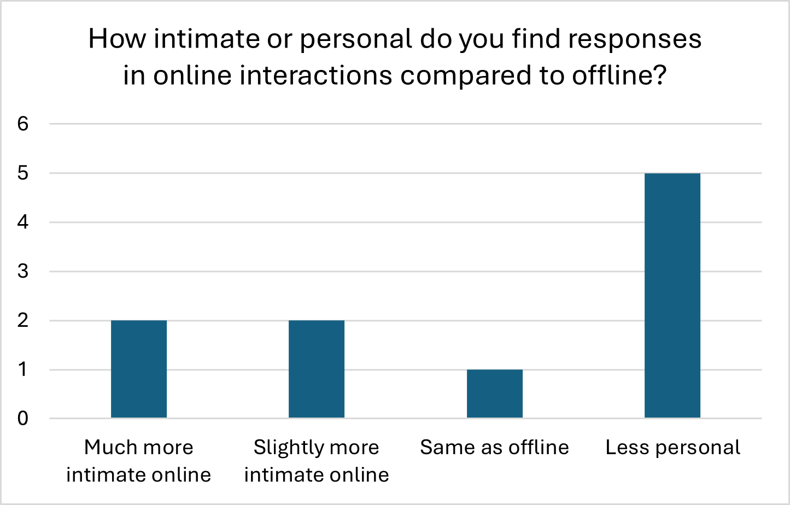

<!DOCTYPE html>
<html lang="en">
<head>
    <meta charset="UTF-8">
    <meta name="viewport" content="width=device-width, initial-scale=1.0">
    <title>LT3210 Final Project</title>
    <style>
        .bigtitle{
        background: lightsteelblue;
        text-align: center;
        margin-bottom: 30px;
        font-size: 30pt;
        padding: 30px;
        color: black;
        border-radius: 20px;
        box-shadow: 0 2px 3px rgba(0,0,0,0.1);
    }
        .analysis{
        background: rgb(220, 247, 242);
        margin-bottom: 10px;
        font-size: 20pt;
        padding: 20px;
        color: black;
        border-radius: 20px;
        box-shadow: 0 2px 3px rgba(0,0,0,0.1);
    }
        .analysis1{
        background: rgb(220, 247, 242);
        font-size: 13pt;
        margin-bottom: 20px;
        padding: 30px;
        color: black;
        border-radius: 20px;
        box-shadow: 0 2px 3px rgba(0,0,0,0.1);
    }
        
    </style>
</head>
</html>
    <h1 class="bigtitle">LT3210 Final Project</h1>

    <body style="background-color: #F7F2ED;">


        <p class= "analysis" style="font-size: 22px;"> 6. Perceived Formality and Intimacy in Different Modes </p>
    <br>
    <br>
    <div style="display: flex; flex-wrap: wrap; justify-content: center; gap: 20px;">
    <div style="text-align: center;">
    
    </div>
    <div style="text-align: center;">
    
    </div>
    </div>

</div>
    <br>
    <p class= "analysis1">For formality in face-to-face conversations, four LLMs judged that speakers distinguish between formal and informal speech “very well” and two selections for “fairly well” and “not very well”, and only one for “not at all”. This means most models lean toward seeing human speakers as generally good at managing formality in face-to-face settings, but there is still noticeable disagreement with three models suggesting weak control over formal and informal shifts. For perceived intimacy in online versus offline interactions, 5 models responded, “less personal”, two “much more intimate online” and “slightly more intimate online”, and one “same as offline”. A majority of the models described online communications as less intimate than real word face-to-face interaction, even though a minority treat online space as potentially more personal.  
    <br>
    <br>
    Overall, these patterns proposed that most LLMs view face-to-face interaction as the primary venue for people to successfully manage formality and are less confident convinced that online communication can achieve a similar level of intimacy. This aligns with the finding of Ramirez et al. (2014), who found face-to-face interaction to be the dominant context for successful formality management and building higher intimacy, while online communication is often seen as impersonal. The mixed responses on formality indicate that models have internalized both the traditional view of spoken conversation as a context for nuanced style-shifting and the more critical view that some speakers struggle with consistent register control. For intimacy, the split between “more intimate online” and “less personal online” reflects competing representations in their training data: some online contexts (e.g., private chats) are highly self-disclosing, while others (e.g., public posts) are more detached.  </p>

    
        
        <p><p1 style="font-size: 20px;"><a href="analysis7.html">Directness when expressing opinions, Compliments, and Disappointments</a></p1> <p2>&nbsp;(next)</p2></p>
        <p><p1 style="font-size: 20px;"><a href="analysis5.html">Multitasking and Language Use</a></p1><p2>&nbsp;&nbsp;(previous)</p2></p>
        <p style="font-size: 20px;"><a href="index.html">Main Page</a></p>